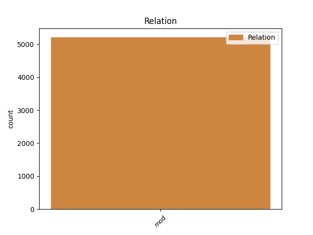
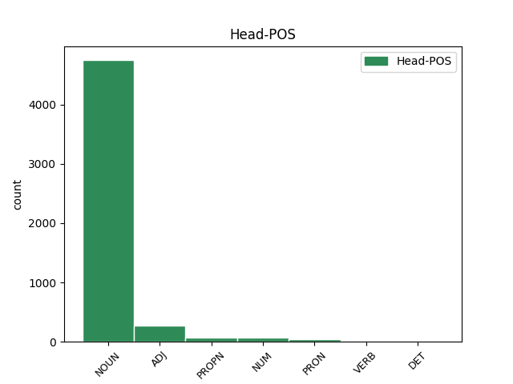
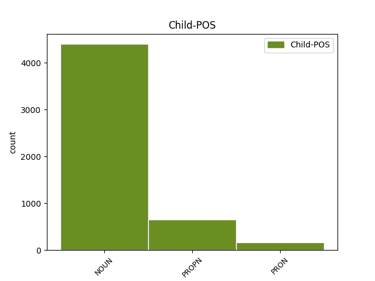

Distribution of features within this leaf



Agreement Rules sorted by frequency.
- When the dependent token is the modifer(mod) of the head token, and the dependent token is NOUN.
1 Sequitur _ _ _ _ 0 _ _ _
2 ut _ _ _ _ 0 _ _ _
3 de _ _ _ _ 0 _ _ _
4 una _ _ _ _ 0 _ _ _
5 reliqua _ _ _ _ 0 _ _ _
6 parte _ _ _ _ 0 _ _ _
7 honestatis _ _ _ _ 0 _ _ _
8 dicendum _ _ _ _ 0 _ _ _
9 sit _ _ _ _ 0 _ _ _
10 in _ _ _ _ 0 _ _ _
11 qua _ _ _ _ 0 _ _ _
12 verecundia _ _ _ _ 0 _ _ _
13 et _ _ _ _ 0 _ _ _
14 quasi _ _ _ _ 0 _ _ _
15 quidam _ _ _ _ 0 _ _ _
16 ornatus _ _ _ _ 0 _ _ _
17 vitae _ _ _ _ 0 _ _ _
18 temperantia _ _ _ _ 0 _ _ _
19 et _ _ _ _ 0 _ _ _
20 modestia _ _ _ _ 0 _ _ _
21 omnis _ _ _ _ 0 _ _ _
22 que _ _ _ _ 0 _ _ _
23 sedatio _ _ _ _ 0 _ _ _
24 perturbationum perturbatio NOUN Nb Case=Gen|Gender=Fem|Number=Plur 0 _ _ _
25 animi animus NOUN Nb Case=Gen|Gender=Masc|Number=Sing 24 mod _ ref=1.93
26 et _ _ _ _ 0 _ _ _
27 rerum _ _ _ _ 0 _ _ _
28 modus _ _ _ _ 0 _ _ _
29 cernitur _ _ _ _ 0 _ _ _
1 Itaque _ _ _ _ 0 _ _ _
2 re _ _ _ _ 0 _ _ _
3 frumentaria _ _ _ _ 0 _ _ _
4 provisa _ _ _ _ 0 _ _ _
5 auxiliis _ _ _ _ 0 _ _ _
6 equitatu _ _ _ _ 0 _ _ _
7 que _ _ _ _ 0 _ _ _
8 comparato _ _ _ _ 0 _ _ _
9 multis _ _ _ _ 0 _ _ _
10 praeterea _ _ _ _ 0 _ _ _
11 viris vir NOUN Nb Case=Abl|Gender=Masc|Number=Plur 0 _ _ _
12 fortibus _ _ _ _ 0 _ _ _
13 Tolosa Tolosa PROPN Ne Case=Abl|Gender=Fem|Number=Sing 11 mod _ ref=3.18.2
14 et _ _ _ _ 0 _ _ _
15 Carcasone _ _ _ _ 0 _ _ _
16 et _ _ _ _ 0 _ _ _
17 Narbone _ _ _ _ 0 _ _ _
18 quae _ _ _ _ 0 _ _ _
19 sunt _ _ _ _ 0 _ _ _
20 civitates _ _ _ _ 0 _ _ _
21 Galliae _ _ _ _ 0 _ _ _
22 provinciae _ _ _ _ 0 _ _ _
23 finitimae _ _ _ _ 0 _ _ _
24 ex _ _ _ _ 0 _ _ _
25 his _ _ _ _ 0 _ _ _
26 regionibus _ _ _ _ 0 _ _ _
27 nominatim _ _ _ _ 0 _ _ _
28 evocatis _ _ _ _ 0 _ _ _
29 in _ _ _ _ 0 _ _ _
30 Sotiatium _ _ _ _ 0 _ _ _
31 fines _ _ _ _ 0 _ _ _
32 exercitum _ _ _ _ 0 _ _ _
33 introduxit _ _ _ _ 0 _ _ _
1 atque _ _ _ _ 0 _ _ _
2 harum _ _ _ _ 0 _ _ _
3 rerum _ _ _ _ 0 _ _ _
4 commemorationem _ _ _ _ 0 _ _ _
5 verecundia _ _ _ _ 0 _ _ _
6 saepe _ _ _ _ 0 _ _ _
7 impedivit _ _ _ _ 0 _ _ _
8 utriusque uterque DET Px Case=Gen|Gender=Masc|Number=Sing 0 _ _ _
9 nostrum nos PRON Pp Case=Gen|Gender=Masc|Number=Plur|Person=1|PronType=Prs 8 mod _ ref=1.17.7
Disagree Examples:
1 liber liber NOUN Nb Case=Nom|Gender=Masc|Number=Sing 0 _ _ _
2 generationis generatio NOUN Nb Case=Gen|Gender=Fem|Number=Sing 1 mod _ ref=MATT_1.1
3 Iesu _ _ _ _ 0 _ _ _
4 Christi _ _ _ _ 0 _ _ _
5 filii _ _ _ _ 0 _ _ _
6 David _ _ _ _ 0 _ _ _
7 filii _ _ _ _ 0 _ _ _
8 Abraham _ _ _ _ 0 _ _ _
1 Iosias _ _ _ _ 0 _ _ _
2 autem _ _ _ _ 0 _ _ _
3 genuit _ _ _ _ 0 _ _ _
4 Iechoniam _ _ _ _ 0 _ _ _
5 et _ _ _ _ 0 _ _ _
6 fratres _ _ _ _ 0 _ _ _
7 eius _ _ _ _ 0 _ _ _
8 in _ _ _ _ 0 _ _ _
9 transmigratione transmigratio NOUN Nb Case=Abl|Gender=Fem|Number=Sing 0 _ _ _
10 Babylonis Babylon PROPN Ne Case=Gen|Gender=Fem|Number=Sing 9 mod _ ref=MATT_1.11
1 et _ _ _ _ 0 _ _ _
2 post _ _ _ _ 0 _ _ _
3 transmigrationem transmigratio NOUN Nb Case=Acc|Gender=Fem|Number=Sing 0 _ _ _
4 Babylonis Babylon PROPN Ne Case=Gen|Gender=Fem|Number=Sing 3 mod _ ref=MATT_1.12
5 Iechonias _ _ _ _ 0 _ _ _
6 genuit _ _ _ _ 0 _ _ _
7 Salathihel _ _ _ _ 0 _ _ _
1 Iacob _ _ _ _ 0 _ _ _
2 autem _ _ _ _ 0 _ _ _
3 genuit _ _ _ _ 0 _ _ _
4 Ioseph _ _ _ _ 0 _ _ _
5 virum vir NOUN Nb Case=Acc|Gender=Masc|Number=Sing 0 _ _ _
6 Mariae Maria PROPN Ne Case=Gen|Gender=Fem|Number=Sing 5 mod _ ref=MATT_1.16
7 de _ _ _ _ 0 _ _ _
8 qua _ _ _ _ 0 _ _ _
9 natus _ _ _ _ 0 _ _ _
10 est _ _ _ _ 0 _ _ _
11 Iesus _ _ _ _ 0 _ _ _
12 qui _ _ _ _ 0 _ _ _
13 vocatur _ _ _ _ 0 _ _ _
14 Christus _ _ _ _ 0 _ _ _
1 et _ _ _ _ 0 _ _ _
2 a _ _ _ _ 0 _ _ _
3 David _ _ _ _ 0 _ _ _
4 usque _ _ _ _ 0 _ _ _
5 ad _ _ _ _ 0 _ _ _
6 transmigrationem transmigratio NOUN Nb Case=Acc|Gender=Fem|Number=Sing 0 _ _ _
7 Babylonis Babylon PROPN Ne Case=Gen|Gender=Fem|Number=Sing 6 mod _ ref=MATT_1.17
8 generationes _ _ _ _ 0 _ _ _
9 quattuordecim _ _ _ _ 0 _ _ _